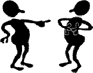

Lesson 4 of 7 - optimize your relationships

Perspective on Black
Sheep, Scapegoats,
and BullyingBy Peter K. Gerlach, MSW
Member NSRC Experts Council
site intro > course outline > Lesson 4 study guide or links, site search, chat, or prior page > here
The Web address of this article is http://sfhelp.org/relate/scapegoat.htm
Updated 02-15-2015
Clicking underlined links here will open a new window. Other links will open an informational popup, so please turn off your browser's popup blocker or allow popups from this nonprofit Web site. If your playback device doesn't support Javascript, the popups may not display. Follow underlined links after finishing this article to avoid getting lost.
This article offers perspective on three common relationship stressors, and options for managing them - "scapegoating," "black sheep," and "bullying." The article assumes you're familiar with...
the intro to this ad-free Web site, and the premises underlying it;
self-improvement Lessons 1 thru 4
perspective on self-respect and self-love
this sample Bill of Personal Rights;
the communication skill of assertion; and...
these sample responses to "difficult people."
This brief YouTube video previews what you'll read here:
Perspective on "Scapegoating"
Can you explain what a "scapegoat" is to an average 10 year old? Have you ever felt like a scapegoat? Dictionary.com offers this definition:
"(A scapegoat is) a person or group made to bear the blame for others or to suffer in their place. (Originally) a goat let loose in the wilderness on (the Jewish celebration of) Yom Kippur after the high priest symbolically laid the sins of the people on its head. (Bible: Leviticus. 16:8,10,26)."
Scapegoating can occur in cultures, religions, politics, governments, businesses, churches, schools, neighborhoods, athletics, families, and other social groups. It also can occur among a group of personality subselves ["All our problems come from that Hot-headed Brat (Inner Child)"]. In each case, several elements combine to cause this divisive dynamic:
one or more members of the group have assumed, or are granted, power to make decisions for the group, like coaches, directors, CEOs, presidents, boards, generals, and parents.
group members compete with each other and/or with other groups for "prizes" like approval, praise, rank, power, fame, titles, (prestige), money, awards, and/or privileges. In families, the prize can be "favorite (grand)son / (grand)daughter / sibling / nephew / niece / cousin or in-law."
the competition promotes significant rivalry among group members to achieve and "be the best," as judged by the group leader/s, the public, and/or other important people.
members who feel judged as "failures" or "inferior" in the competition feel excessively shamed - i.e. "inferior." This is common in low-nurturance ("dysfunctional") families and other groups.
the shamed members try to deny and/or deflect from their "failure" by blaming one or more other people or group;
the people or groups involved don't know how to do win-win problem-solving, so they cause stress by using these alternatives;
And a final element is..
the group members are unaware they're scapegoating, or are ashamed of doing it so they minimize, deny, or rationalize (excuse) it; and may blame someone else for it.
These elements usually cause one or more Persecutor - Victim - Rescuer relationship triangles in the group, and/or among competing groups. These triangles amplify everyone's stress, which may promote more scapegoating (blaming and finger-pointing).
Do these elements make sense to you? Can you think of other reasons scapegoating occurs?
What's Wrong With Scapegoating?
There are several reasons to avoid or stop this social stressor::
the "goat" (victim) feels misunderstood, disrespected, and unfairly blamed. These usually cause resentment, hurt, anger, frustration, defensiveness, counterblaming, and ongoing or escalating conflict. These can promote depression, addictions, aggression and even suicide.
scapegoating promotes divisive, self-amplifying Persecutor - Victim - Rescuer (PVR) relationship triangles. These cause all group members and supporters ongoing stress.
as long as the "blamers" deny or minimize their shame and insecurity, they will lower their group's nurturance level, productivity, unity, and stability. If this occurs in a family with young kids, the adults' bias, blaming, and denials set an unhealthy example, and promote passing on inherited psychological wounds to the young people.
When values conflicts and scapegoating occur between cultures, religions, and nations, many people die.
To stop scapegoating in your family or another group you belong to, consider these practical choices:
__ 1) Respectfully invite all members of the group to become aware of scapegoating, what causes it, and its effects (above). Expect resistance and/or disinterest.
__ 2) Identify the people who are c/overtly blaming the "goat," and assess them for significant psychological wounds. People guided by their true Self are unlikely to attack or scorn others.
__ 3) Avoid preaching, moralizing, criticizing, hinting, manipulating, scolding, explaining, and/or scorning the blamers. Accept that scapegoating is irrational and reflexive, not logical and conscious.
__ 4) Alert group members to their wounds and what they mean, and to the toxic [wounds + unawareness] cycle. Then invite these people to study Lesson 1 and commit to healing their wounds - specially if they're parents. Expect resistance and indifference.
__ Option 5) Invite all involved adults to improve their communication (and problem-solving) effectiveness by studying and applying Lesson 2 together. This has many benefits for everyone.
__ 6) If you feel scapegoated...
Adopt a long-range view, and commit to honoring your integrity and gaining and preserving your self respect.
Check yourself for psychological wounds. They may be causing you to distort reality and/or to avoid asserting your needs and limits. Use this comparison for a quick assessment. The most powerful option you have is to free your true Self to guide you.
If you feel you're not distorting reality, (a) evolve a meaningful Bill of Personal Rights and (b) use it to respectfully assert your needs, opinions, and boundaries to those who blame and scorn you.
Check the family or group you belong to for significant dysfunction. If you find any, lower your expectations and question why you choose to participate in this group.
If you feel the people blaming and/or punishing you are Grown Wounded Children (GWCs), consider these options for relating to them. Avoid arguing, complaining, whining, power struggles, and counterblaming. They will amplify everyone's stress, and may lower others' respect for you.
Learn how to recognize and handle values conflicts and relationship triangles, and invite relevant others to learn how to do this as teammates.
Regularly use these ageless wisdoms to guide you in all relationships and situations.
Did you realize how many options you have about scapegoating?
Now let's look at a related social stressor...
According to Wikipedia...
"The term originated from the occasional black sheep which are born into a flock of white sheep due to a genetic process of recessive traits. Black wool was considered commercially undesirable because it could not be dyed. In 18th and 19th century England, the black color of the sheep was seen as the mark of the devil In modern usage, the expression has lost some of its negative connotations, though the term is usually given to the member of a group who has certain characteristics or lack thereof deemed undesirable by that group."
In some families and other social groups, a member who's values and behaviors differ markedly from those of other members' can be spurned, scorned, and openly or covertly excluded from full group-membership status. The judgmental people may deny or admit and justify their bias.
The group's disapproval can range from mild to extreme - e.g. refusing to mention a family member's name, throwing out all mementos of him or her, excluding them from family gatherings, and offering no support to the person in troubled times.
While every case is unique, common reasons for this "black sheep" dynamic are:
Key group members are psychologically wounded and insecure, and (their governing subselves) feel threatened by the "sheep's" discordant values and behavior. The threats may include...
admitting something shameful about the group, like addictions, ignorance, criminal behavior, abuse, dishonesty, poverty, or bigotry;
admitting that ancestral customs, values, traditions, and rituals are obsolete, unhealthy, and/or harmful;
public scorn, pity, and/or ridicule of some or all group members;
losing some prized social status, privilege, reputation, or power; and/or...
exclusion of group members from some prestigious or powerful social organization.
These group members may 'gossip" and reinforce each others' disapproval, scorn, pity, punishment, and exclusion of the "sheep;"
Other contributing factors may be that...
The "black sheep" has inherited psychological wounds including excessive shame, and s/he unconsciously invites or endures disapproval, pity, and/or exclusion. S/He doesn't know how to assert her or his personal rights, needs, and boundaries effectively; and...
the "sheep" has unconsciously adopted or accepted a victim or rebel role in the family or group system, and doesn't acknowledge this or know what to do about it. This usually indicates being ruled by a false self; and...
the social environment around the group (like relatives, a church community, neighbors, and/or a "corporate culture") ignores, tolerates, or approves of the prejudicial attitude and behaviors.
Can you think of other reasons for this "black sheep" group behavior?
If you feel like a "black sheep," you're probably...
a survivor of significant early-childhood abandonment,. neglect, and abuse ("trauma");
a member of a significantly-dysfunctional (low nurturance) family or group;
feeling hurt, resentful, frustrated, angry, and/or defiant and rebellious; or...
you lack self-respect; feel intimidated, guilty, shamed; and you accept a "victim" role and 1-down (inferior) attitude in your group.
And you may...
feel conflicted over wanting acceptance and approval from your group, and wanting to distance yourself from those who disapprove of you.
If you care for kids, these traits probably reduce your effectiveness as a caregiver; increase your frustration, guilt, and shame; and raise the odds that you may accidentally pass on inherited psychological wounds.
Factors like these promote significant personal and relationship stress and unhappiness, and inhibit group health and functionality.
If you scorn, shun, or dislike a "black sheep," you...
are probably a Grown Wounded Child, and don't know it or what it means; and you...
are probably denying the black-sheep behavior of your group, and/or you minimize, justify and/or excuse it ("it's not our fault!"); and you...
are probably not aware of the elements that promote this blaming (above). or you're indifferent to them; and you...
probably don't know how to manage values conflicts and relationship triangles effectively, and...
if you're guiding someone's kids, you're behavior is probably teaching them to blame and scorn rather than be compassionate and do win-win problem-solving.
Do these consequences of "black sheep" behavior match your experience?
If you're being treated as a black sheep in your family or another group...
get and stay clear on what you can change in this situation and what you can't;
apply appropriate scapegoating options above;
tailor and apply the options in these articles on handling prejudice and relationship cutoffs;
review and apply these ideas on raising self and mutual respect. If you don't respect yourself and/or your behavior implies disrespect for other group members, you're inviting treatment as a black sheep; and...
review and selectively apply these communication options with "problem people."
If you're part of a group which has designated a "black sheep" - specially if young kids are affected, study and apply Lessons 1 thru 5 or 6 here for everyone's sake! This relationship stressor is a family-system problem as well as a personal one.
This is not a complete summary of your "black sheep" choices. Notice the theme of these options (healing and learning), and trust your true Self to identify other things you can do to improve your unique situation.
Now let's build on the scapegoating and black-sheep ideas above to examine a third related relationship stressor:
Have you ever known a "bully"? How would you characterize a male or female "bully"? Dictionary.com says a bully is...
"a blustering, quarrelsome, overbearing person who habitually badgers and intimidates smaller or weaker people."
Oddly, the term originally meant (male or female) "sweetheart" in 16th-century Europe, and was an English term of approval for a time ("He's a bully chap!").
Note that some people can be aggressive, manipulative, and/or controlling without being a bully - i.e. without using intimidation to get their way. Feeling manipulated or bullied is a subjective judgment.
Bullying behavior promotes stressful Persecutor - Victim - Rescuer relationship triangles in families and other social groups - specially if most group members are wounded and unaware. Most people aren't aware of these triangles and don't know how to prevent or resolve them.
. A common illusion is that bullies are "abusive." If the bully and victim don't meet three criteria, the bully is aggressive, not abusive. Knowing this difference can help in communicating and relating to an aggressor. For more perspective, on abuse, read this after you finish here.
One way to describe a gang is "a group of bullies." In low-nurturance schools, teams, churches, cities, and nations, bullies often attract followers. These may become aggressive gangs (like Hell's Angels and Nazis) which claim and fight for "turf" - zones of control, ranging from neighborhoods to whole nations. Most dictators and warlords like Saddam Hussein, Idi Amin, Adolf Hitler, Joseph Stalin, Nero, and Genghis Khan have the personal traits above. They use coercion, violence, threats, and deception to gain and keep power over others.
Some gang members are attracted by the social status and reputation of the leader/s and the approved use of violence, power, and intimidation. Other members join out of fear of being victimized and/or scorned if they don't. Either way, typical gang members and leaders are poorly educated, wounded survivors of early-childhood trauma.
Cults are groups of people who share a common belief in something that non-members don't believe. The belief is often religious, spiritual, sexual, and/or occult. Cult leaders like Charles Manson, David Koresh, and Jim Jones are usually very charismatic, eloquent, egocentric - and psychologically wounded. They may or may not be bullies.
Tho every case is unique, there are some common causes. Typical young and adult "bullies"...
probably experienced major early-childhood abandonment, neglect, and abuse (trauma) and they inherited significant psychological wounds from their ancestors;
are controlled by a well-meaning false self, and don't know that or what it means;
unconsciously compensate for feeling insecure and inferior (shamed) by seeking power and control over others;
are egocentric ("self-centered"), unempathic, and often have an exaggerated sense of their own importance ("egotism");
may have repressed major hurt and rage from prior losses and traumas. Where true, they may self-medicate with one or more addictions;
And typical bullies...
see life as a ceaseless black/white competition, in which people are either winners (strong and superior) or losers (weak and inferior); and they...
see compassion, compromise, and kindness as "weakness;" and they...
can't genuinely bond or empathize with other people, which increases their sense of inferiority; and typical bullies...
don't know how to problem-solve (fill needs) cooperatively, so they discover that inflicting fear and pain will reliably yield social satisfactions. And they...
are used to dysfunctional (low-nurturance) social environments, and unconsciously seek and recreate them.
Does this summary seem reasonable to you? Can you think of other reasons that kids and adults become bullies? One implication of these interactive causes is that you cannot use logic to persuade a bully to change their values and behaviors. History demonstrates that hitting true bottom - usually in midlife or later - may cause bullies to seek personal self-awareness and wound-reduction.
Have you ever felt "bullied"? If so, how did you respond? Hide? Submit? Anger? Revenge? Aggression? Plead? Whine? Placate? Complain? Many factors determine how a "victim" can best respond. These options can help in any situation:
KEY Assess yourself for psychological wounds - specially for excessive shame and fears. If you inherited wounds, commit to reducing them over time. Lesson 1 provides an effective way to do this.
Focus steadily on building your self-love, self-respect, and self-confidence (healing your wounds) long-term, rather than trying to combat the bully short term.
With your true Self guiding you, compose a meaningful declaration of your Rights as a worthy, dignified person. Use this example to guide you.
Inventory your personal strengths and stay aware of them.
Stay clear on the difference between abuse and aggression. Accusing someone of abuse is provocative, and will often increase relationship stress.
Try out these ideas on setting and enforcing personal boundaries.
KEY Improve your communication skills. Focus specially on learning how to assert your needs and boundaries and handle "resistances." See Lesson 2.
Stay clear on the difference between anger and frustration. This will help you identify and assert your needs and boundaries.
Apply these ideas on avoiding and dissolving Persecutor - Victim - Rescuer relationship triangles, and teach other adults and kids about them.
Experiment with these ways of responding effectively to "difficult people."
If you care for kids who are being bullied, patiently help them learn and apply the ideas above. Stay aware that they learn from your actions as well as your words! Also assess the nurturance-levels of their home and family environments, and improve them as needed.
Notice the theme of these options, and use your creativity and wisdom to expand them to fit you and your situation. The keystones are freeing your true Self to guide you, raising your self esteem, and learning to communicate effectively!
This article offers perspective on three personal and social stressors: scapegoating, "black sheep," and bullying (aggression). All three are symptoms of inherited psychological wounds and personal unawareness and ignorance.
The article proposes common causes for these stressors, and options for responding effectively to each of them. Keys to responding well are intentionally (a) reducing any psychological wounds, (b) raising your self-esteem, (c) improving your communication skills - specially assertion; and (d) learning about key relationship and family dynamics.
The ad-free self-improvement Lessons in this Web site can help accomplish each of these over time.
Pause, breathe, and reflect - why did you read this article? Did you get what you needed? If not, what do you need? Who's answering these questions - your true Self, or ''someone else''?
his article was very helpful somewhat helpful not helpful
site intro / course outline / site search / definitions / chat / contact